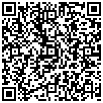
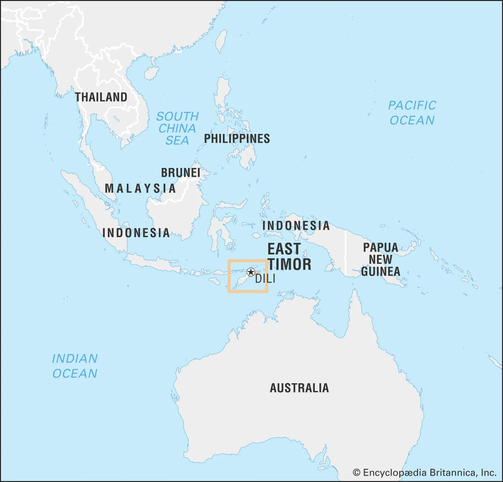
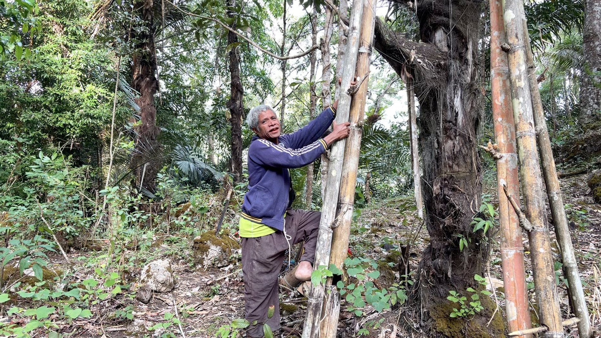
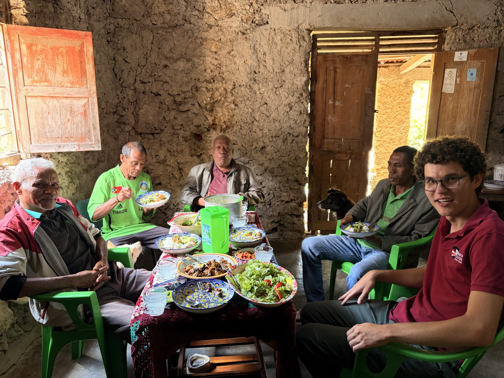
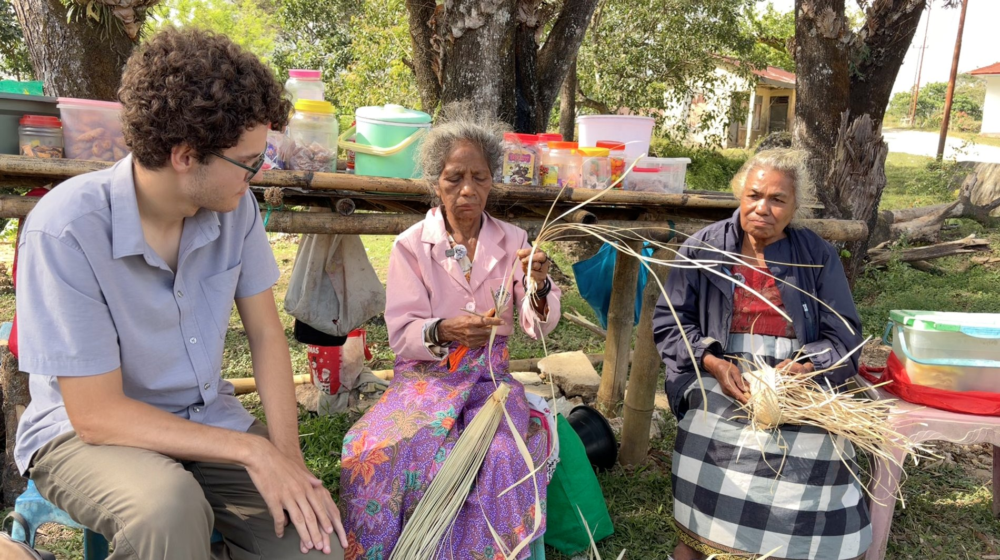
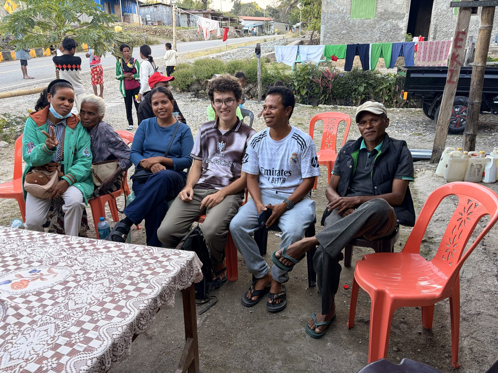

Linguistics at UH Mānoa, Fieldwork, and Your Drafts
LING 150C, Week 13
![]()
November 19, 2026
Reminders
Monday, November 23, 8:00 am (extended from Friday): Draft due on Lamākū (at least 1,750 words, excluding references).
Week 14: sign up for a presentation slot (Google Sheet); Discussion Post #8.
No class Thursday, November 26 (Thanksgiving).
Today’s Plan
Part 1: Linguistics at UH Mānoa (about 10 min)
- Grace (Ch. 22): why the department focuses on Oceania
- One example: Rehg and the Pohnpeian grammar
- Documentation at UHM today, and how you can get involved
Part 2: Fieldwork (about 10 min)
- My work on Midiki
Part 3: Draft clinic (about 35 min)
- Pair up, swap drafts, and give each other feedback
Wrap-up (about 5 min)
Part 1: Linguistics at UH Mānoa
Why Oceania? (Grace, Ch. 22)
From its start in 1963-64, the department has focused on the languages of Oceania. Grace gives four reasons:
- The host language and its relatives: an obligation, given their interest to the people of Hawaiʻi
- Convenience: speakers were in Hawaiʻi, and fieldsites were easier to reach from here than from anywhere else in the US
- Prehistory: how the languages are related is evidence for how the peoples settled the Pacific
- Expertise: most early faculty were already Oceanic specialists
Three Regions, Three Needs
| Region | State of knowledge in the 1960s | What the department did |
|---|---|---|
| Polynesia | Fairly well known: accurate list of languages, some dictionaries and grammars | Studies of Hawaiian and specific problems; two Outlier languages; Tongan |
| Melanesia | Hundreds of languages, many unknown; the greatest diversity | Fieldwork in New Caledonia, Vanuatu, the Solomons, and Papua New Guinea; the Fijian dictionary; the New Guinea project (1975-76) |
| Micronesia | Poorly known until World War II | The department’s greatest impact |
Why would Micronesia be where UH made the biggest difference?
From Grace to Rehg: One Grammar
The Pacific Languages Development Project (1970-74): standard orthographies, reference grammars, bilingual dictionaries, and training for Micronesians
Example: the Ponapean Reference Grammar (Pohnpeian), written by Ken Rehg with a native-speaker assistant, for speakers of the language
Rehg (2014) says it:
- changed how young speakers viewed their language (teenagers used to say Pohnpeian “had no grammar”)
- is used to teach Pohnpeian to learners, including Peace Corps volunteers
- supports teaching of the standard orthography and led to a community grammar written by two Pohnpeians
Is a grammar “documentation” or “description”?
The Authors You Have Read
Grace’s list of contributors to the reader (22 people): every one has a UH connection (a degree, teaching, or an affiliation):
- Schütz (Ch. 17 and Fijian), Lynch (diversity), Meyerhoff (pidgins and creoles), Sakoda & Siegel (Hawaiʻi Creole English), Guérin & Yourupi (endangerment), Wilson (Hawaiian revitalization), Benton (Māori), Thieberger (documentation)
Grace also lists three kinds of contribution: research, publishing (Oceanic Linguistics, brought to UH in the 1960s), and students: “the multiplier effect.”
Part 2: Documentation at UHM Today
From PLDP to DLPHI
| 1970-74 | 2024 on | |
|---|---|---|
| Project | Pacific Languages Development Project | Diaspora Languages Project in Hawaiʻi (DLPHI) |
| Where | Micronesia (Trust Territory) | Micronesian communities in Hawaiʻi |
| Funding | Trust Territory government | National Science Foundation |
| Aims | Orthographies, grammars, dictionaries, training | Annotated documentation, research, training |
What stayed the same, and what changed?
DLPHI: What’s Happening Now
An NSF-funded project to support diaspora language communities, focusing on the Micronesian diaspora in Hawaiʻi
- Why? Outmigration and rising seas threaten Micronesian languages; the Micronesian population in Hawaiʻi may be as many as 30,000 (nearly 2% of the state), yet support for Micronesian languages here is almost nonexistent
- LDTC: training workshops for specific skills and specific communities
- MURAL: undergraduates of Micronesian heritage do their own documentation project and present it each year
- Research: ultrasound studies of Palauan and Woleaian; corpus building; typology and grammar
Why would a documentation project train community members instead of only recording?
Get Involved: ICLDC 10
10th International Conference on Language Documentation & Conservation
- March 4-7, 2027, Honolulu (Hawaiʻi Imin International Conference Center)
- Theme: “Arts Sustaining Language” (storytelling, song, performance, visual arts)
- Hosted by UH Mānoa Linguistics with UH Hilo’s Ka Haka ʻUla O Keʻelikōlani; co-chairs Holton, Pappas, and Solomon
Volunteer and get free registration and a free T-shirt:
- Go to an orientation session before the conference
- Work at least 5 hours across the conference days
- Fill out the Volunteer Interest Form by Jan 31, 2027

Part 3: Fieldwork
My Fieldwork: the Midiki language
Midiki is a language spoken in Timor-Leste, Asia’s youngest country (independent since 2002)
- Began after living in the Midiki-speaking community for two years as a Peace Corps volunteer
- Work with local leadership to determine goals for the language documentation project
- Find ways to develop materials useful to the community in addition to my own research outputs
- This past summer:
- 10 weeks, ~15 hours of recordings, 45 speakers, 9 villages
- All archived in Kaipuleohone Archive https://hdl.handle.net/10125/737754

What would you want to record if you were documenting a language today?
Fieldwork in Timor-Leste




Part 4: Draft Clinic
Ground Rules for Giving and Getting Feedback
When you are the reader
- Start with the big picture. Do not fix spelling or grammar today.
- Say what you understood: “I read this as…”
- Say what works, then what is unclear. Be specific: point to a sentence or paragraph.
When you are the writer
- Before your partner reads: tell them one question you want help with. Example: “Is my question too big?”
- While they talk: listen and take notes. Do not defend or explain your draft.
- After: say back what you heard. You decide which advice to use.
How This Will Work (about 35 min)
- Pair up (4 min). Have your draft/outline, even if it is not finished. Tell your partner one question you want help with.
- Round 1, the big picture (9 min). Read your partner’s introduction. Try to identify their thesis. Then say: “Your question is , and your answer is .”
- Round 2, the body (9 min). Read the first sentence of each paragraph. Does each one support the answer?
- Round 3, evidence and citations (9 min). Check the sources and the reference list.
- Make a plan (4 min). Write down one change you will make this weekend.
In every round:
- Swap drafts. Both of you read at the same time (about 3 minutes).
- Partner A gives feedback (about 3 minutes). Writer A listens and takes notes.
- Switch. Partner B gives feedback (about 3 minutes). Writer B listens and takes notes.
What a Strong Draft Has
From the Final Paper guide:
- Introduces the language, country, or island and the topic, and states the research question clearly
- Argues an answer supported by evidence from academic sources, with in-text citations
- Connects to at least one idea or reading from the course
- Has a clear structure: each body paragraph makes one point and points back to the question
- Includes a reference list in one consistent citation style
It does not have to be polished, but it does need to be complete: introduction, body, conclusion.
Reader’s Checklist
Introduction
- Can you say the question and the answer in one sentence each?
- Is the question one question, not two?
Body
- Does each paragraph make one point and back it with a source?
- Is there a link to a course reading?
Sources and citations
- Academic sources (books, chapters, peer-reviewed articles, grammars, dictionaries)?
- Each in-text citation matches the reference list; one style throughout
Conclusion
- Does it answer the question and say what is left to find out?
Common Fixes
| If you see… | Try… |
|---|---|
| A question with two parts | Pick the part you can answer well; make the other background |
| A question that assumes the answer (“Why is X so …?”) | Ask what the evidence says: “In what ways …?” |
| Summary of sources, with no argument | Add a claim to each paragraph, then use the source as evidence |
| A website or encyclopedia as a source | Find the scholarly source it cites |
| A citation with only a URL | Add author, year, title, and publication details |
| No link to the course | Name a reading and say how your case fits or changes its idea |
Writing Support and AI
- Questions? Office hours W/F 1:30-2:30, Moore 574, or email
- Generative AI (syllabus §3.3): you may use it to support your thinking and polish your writing, but not to generate first drafts or summarize readings
- If you use it, include a brief statement at the top of the assignment; undisclosed use to produce substantive content is treated as academic dishonesty. When in doubt, ask me.
Wrap-Up
- Today: UH linguistics and documentation, my fieldwork, and your drafts
- Mon 11/23, 8:00 am: draft due on Lamākū
- Want to volunteer at ICLDC (March 2027)? Form closes Jan 31: go.hawaii.edu/SSV
What is one thing you will change in your draft this weekend?
Sources Behind Today’s Slides
- Grace, George W. Ch. 22: The University of Hawaiʻi linguistics department and Oceanic linguistics. In Languages of the Pacific Islands: Introductory Readings, 265-271.
- Rehg, Kenneth L. 2014. On the role and utility of grammars in language documentation and conservation. In Nakayama & Rice (eds.), The Art and Practice of Grammar Writing, LD&C Special Publication 8, 53-67.
- UH Mānoa Department of Linguistics. Diaspora Languages Project in Hawaii (DLPHI): manoa.hawaii.edu/linguistics/research/dlphi
- UH Mānoa Department of Linguistics. Research: manoa.hawaii.edu/linguistics/research
- ICLDC 10: ling.lll.hawaii.edu/sites/icldc
- Himmelmann (1998, 2006), Thieberger Ch. 21, and the other readings from Tuesday’s deck

LING 150C